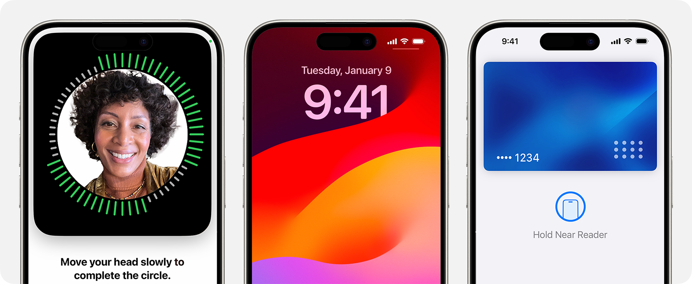
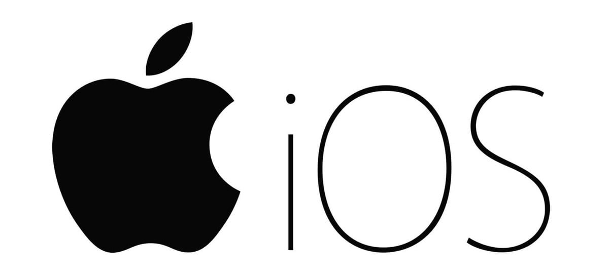
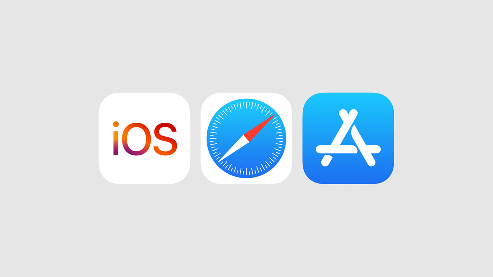

IOS: Origens e Revolução da Computação Móvel
-
O iOS, lançado pela Apple Inc em 2007, surgiu com o advento do iPhone, marcando o início de uma
nova era na computação móvel. O iPhone introduziu uma abordagem revolucionária para interação com
dispositivos móveis, oferecendo uma interface de usuário inovadora e gestos intuitivos que mudaram
fundamentalmente a forma como as pessoas interagem com a tecnologia. - Interface de Usuário Intuitiva e Revolucionária:
A interface de usuário do iOS é um dos aspectos mais marcantes de sua evolução.A introdução de
gestos como toque, deslize e pinça tornou a navegação nos dispositivos iOS uma experiência natural
eintuitiva, estabelecendo um novo padrão para usabilidade em dispositivos móveis.
- Foco em Segurança e Privacidade:
O iOS é conhecido por suas medidas robustas de segurança e privacidade, que sempre foram uma
prioridade para a Apple.Recursos como criptografia de dados, autenticação biométrica (Touch ID e Face
ID) e sandboxing de aplicativos garantem a proteção dos dados dos usuários e a integridade do
sistema. - App Store: Transformando a Distribuição de Aplicativos:
O lançamento da App Store em conjunto com o iOS foi um marco na história da computação móvel.
A App Store revolucionou a distribuição e o consumo de aplicativos, criando um mercado vibrante para
desenvolvedores e oferecendo aos usuários uma variedade incomparável de aplicativos para escolher.
- Integração Perfeita entre Hardware e Software:
A Apple é conhecida por sua integração harmoniosa entre hardware e software, garantindo um
desempenho otimizado e uma experiência de usuário superior nos dispositivos iOS.Essa integração
permite otimizações de desempenho, uso eficiente de recursos de hardware e uma vida útil prolongada
da bateria. - Iterações e Inovações Constantes:
O iOS passou por várias iterações ao longo dos anos, cada uma trazendo novos recursos e melhorias
significativas.Desde a introdução da Siri como assistente virtual até o lançamento do Apple Pay para
pagamentos móveis e a incorporação de tecnologias de realidade aumentada como o ARKit, o iOS
continua a evoluir e liderar a inovação no mercado de dispositivos móveis.
- Legado e Impacto Duradouro:
A história da evolução do iOS é uma saga de inovação contínua, usabilidade aprimorada e compromisso
com a segurança e a privacidade dos usuários.O iOS não apenas moldou o presente da computação
móvel, mas também deixou um legado duradouro, inspirando gerações de usuários e desenvolvedores
e pavimentando o caminho para o futuro da tecnologia móvel.